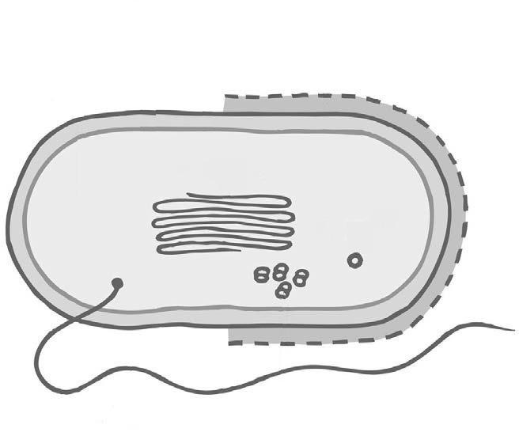

BZWU Wil-Uzwil · Milchtechnologin / Milchtechnologe EFZ · a.8
Bakterienzelle
Tippen Sie im Bild auf die gesuchte Struktur.
← Alle Lerntools
Struktur
1
/ 8
Tippen Sie auf:

Fertig!
Nochmals
Alle Strukturen anzeigen
Weiter